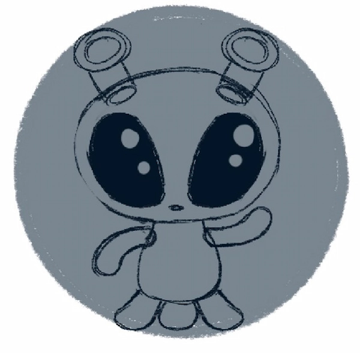
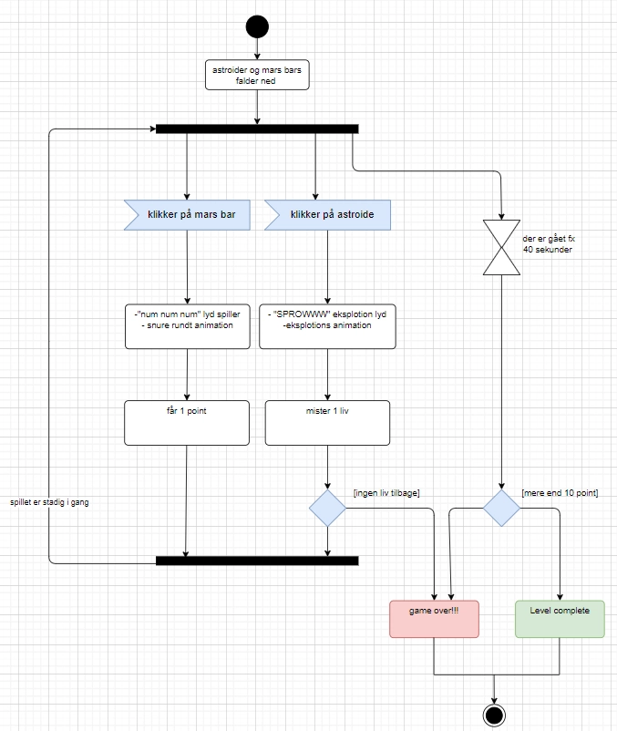
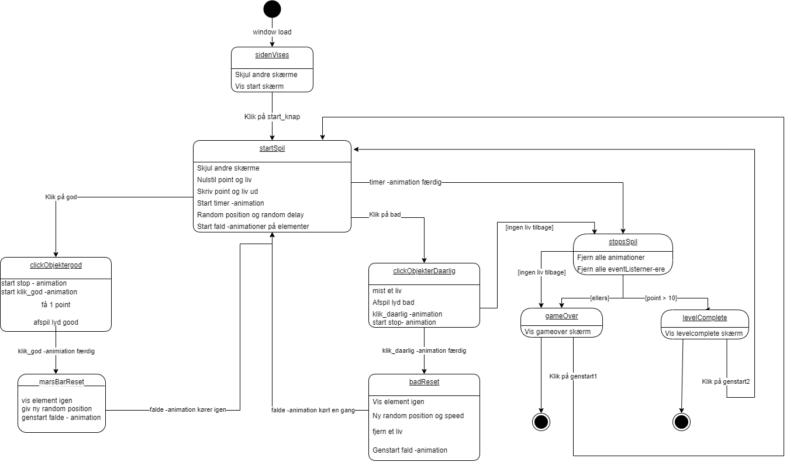

Teknik
spillet koncept
Spillet handler om en alien som bor på Mars, og man skal hjælpe den med at samle flyvende Mars
bars som falder fra rummet. Men det er ikke det eneste som falder fra rummet, asteroider kommer
ind i mængden af de faldene Mars bar og du skal undgå at klikke på dem.
Hvis du klikker på 3
asteroider, mister du dine tre liv og spillet slutter men vis du opnår at indsamle mere en 15
mars bar så vinder du og alien bliver glad

Aktiverings diagram
Aktiveringsdiagrammet bliver brugt til at vise spillet forløb. Spillet har en timer på 40sekunder
hvor du skal når at indsamle 15 point, og vi går til level-complete.
Men hvis man ikke får mere
en 15 point eller mister sine tre liv så taber man og spillet går i funktionen i game over.

Statemachin diagram

Statemachine diagramet viser flowet it selve javascriptet for spillet. Det tydeliggør, hvilke
funktioner der udføres, og hvor de leder hen. Diagrammet viser også adfærden for forskellige
game- og UI-elementer ved handlinger som "mousedown".
Det guider fra start til slut, hvor hver
funktion udfører specifikke opgaver. For eksempel starter den med funktionen "visSiden", som
skjuler skærme og viser en startside med en knap. Denne knap fører derefter til funktionen
"startSpil".